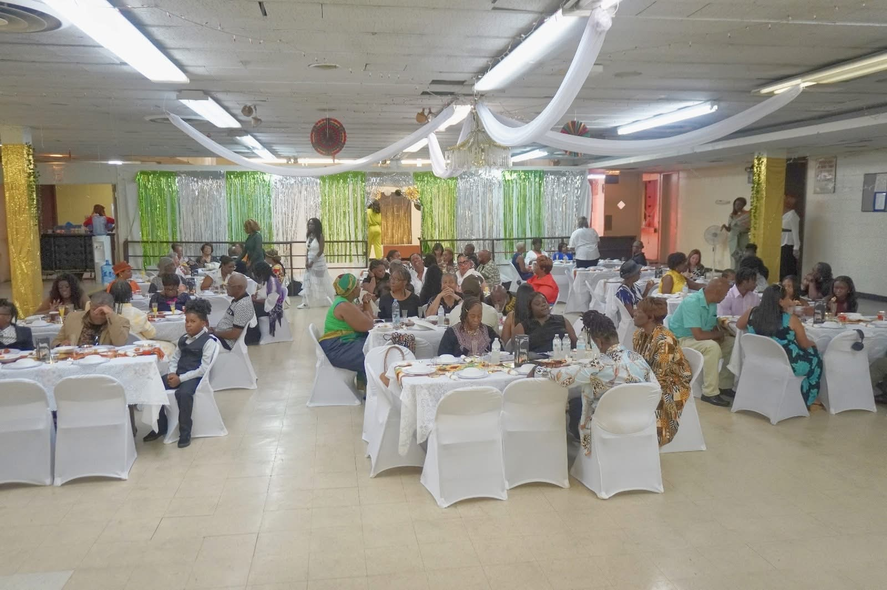
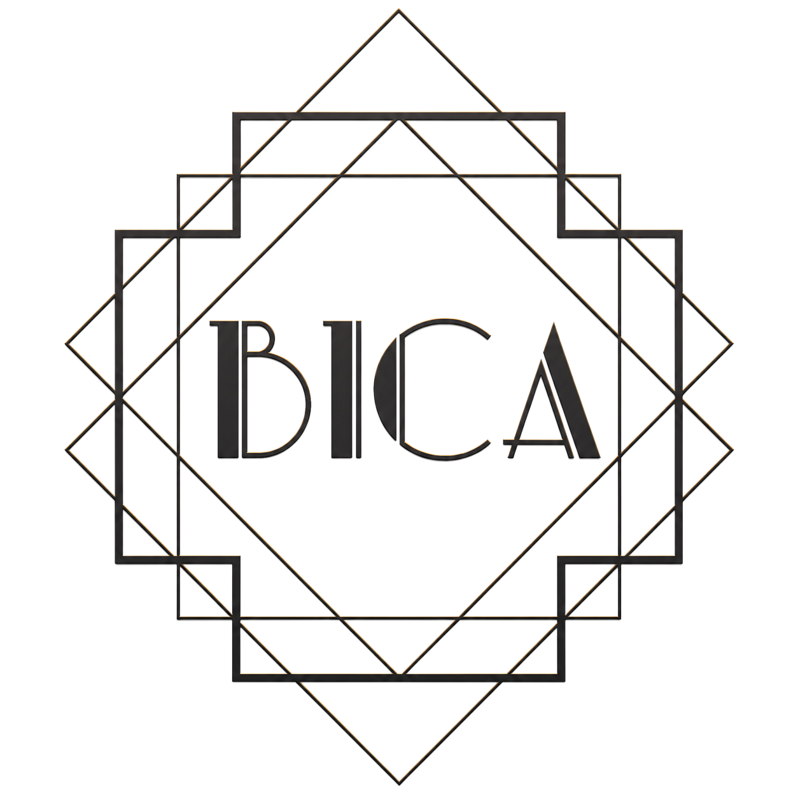
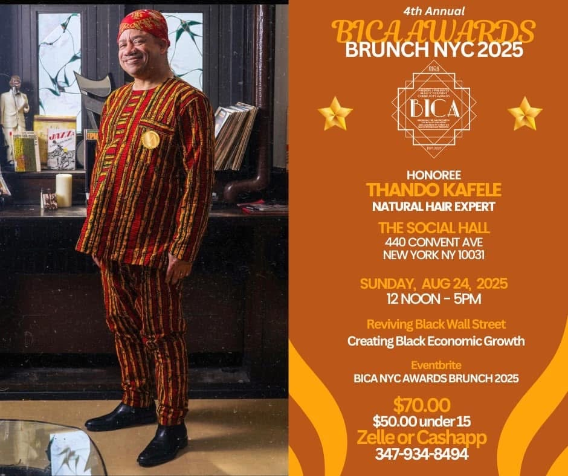

Brunches
Spaces where conversation, recognition, and Black business all share the same table.

The NYC chapter gathers Black beauty professionals, entrepreneurs, artists, and neighbors for awards brunches, social rooms, and community-centered celebrations that turn visibility into relationship and relationship into economic momentum.

Spaces where conversation, recognition, and Black business all share the same table.
Honoring builders, creatives, educators, and organizers shaping the culture.

Recent NYC materials highlight honorees, Harlem gatherings, and Black economic growth.
What the chapter holds
BICA began with a simple purpose: close the distance between the beauty industry and the community. In New York, that takes shape through brunches, honoree spotlights, vendor visibility, networking, and social programming that feels elevated without losing its grassroots energy.
Recognition-driven gatherings that spotlight Black achievers, businesses, and community care.
Networking rooms designed for artists, educators, founders, stylists, and supporters to mix.
Programming shaped by Black business support, intentional spending, and shared visibility.
NYC Chapter Pulse
Recent public NYC event listings place BICA gatherings at 440 Convent Avenue in Hamilton Heights, reflecting a chapter rhythm centered on awards brunches, networking, and community economics.
Read the story behind BICA NYC